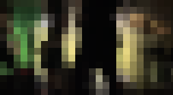

back
create gif moving from one image in ascii to another

from PIL import Image, ImageFont, ImageDraw
import imageio
def transition_arrays(array1, array2):
transition_arrays = []
# Use the size of the smaller array if they are not the same length
min_length = min(len(array1), len(array2))
# Calculate the number of steps for the transition
steps = max(abs(array1[i][j] - array2[i][j]) for i in range(min_length) for j in range(len(array1[i])))
# Generate intermediate arrays
for step in range(steps + 1):
intermediate_array = []
for i in range(min_length):
row = []
for j in range(len(array1[i])):
# Calculate the intermediate value for each element
intermediate_value = int(array1[i][j] + (array2[i][j] - array1[i][j]) * step / steps)
row.append(intermediate_value)
intermediate_array.append(row)
transition_arrays.append(intermediate_array)
return transition_arrays
def image_to_ascii(image_path, width=100):
img = Image.open(image_path)
img = img.convert('L') # Convert to grayscale
aspect_ratio = img.height / img.width
height = int(width * aspect_ratio)
img = img.resize((width, height))
ascii_values = []
for y in range(height):
ascii_row = []
for x in range(width):
pixel_value = img.getpixel((x, y))
ascii_row.append(pixel_value)
ascii_values.append(ascii_row)
return ascii_values
# Load images and convert them to ASCII arrays
ascii_array1 = image_to_ascii('../IMG_2588.JPG')
ascii_array2 = image_to_ascii('../Ren1129_Ren1129-R1-073-35.jpg')
# Generate transition between the two ASCII arrays
transition = transition_arrays(ascii_array1, ascii_array2)
def create_ascii_gif(transition_arrays, output_path, fps=10, first_last_duration=500):
# Define font
font_path = "/System/Library/Fonts/Andale Mono.ttf" # Change this to the path of a monospaced font on your system
font_size = 12
font = ImageFont.truetype(font_path, font_size)
# Get the dimensions of the characters in the font
char_width, char_height = font.getsize("A")
images = []
for ascii_array in transition_arrays:
# Calculate the dimensions of the image based on the size of the ASCII array and the font
width = len(ascii_array[0]) * char_width
height = len(ascii_array) * char_height
# Create a new image with white background
image = Image.new("RGB", (width, height), "white")
draw = ImageDraw.Draw(image)
# Draw ASCII characters on the image
y = 0
for row in ascii_array:
x = 0
for char_code in row:
char = chr(char_code)
draw.text((x, y), char, fill="black", font=font)
x += char_width
y += char_height
images.append(image)
# Save images to GIF
first_frame = images[0]
last_frame = images[-1]
images = [first_frame] + images + [last_frame]
durations = [first_last_duration] + [int(1000 / fps)] * len(transition_arrays) + [first_last_duration]
images[0].save(output_path, save_all=True, append_images=images[1:], duration=durations, loop=0)
# Example usage
output_path = 'ascii_transition.gif'
create_ascii_gif(transition, output_path)
generate random song lyrics based on a corpus
import random
def generate_markov_chain(text, order=2):
words = text.split()
chain = {}
for i in range(len(words) - order):
current_state = tuple(words[i:i + order])
next_word = words[i + order]
if current_state in chain:
chain[current_state].append(next_word)
else:
chain[current_state] = [next_word]
return chain
def generate_lyrics(chain, starting_state, length, switch_frequency=20):
current_state = starting_state
lyrics = list(starting_state)
word_count = len(starting_state)
while word_count < length:
if current_state in chain:
next_word = random.choice(chain[current_state])
lyrics.append(next_word)
current_state = tuple(lyrics[-len(starting_state):])
word_count += 1
# Insert indentation randomly every 9-15 words
if word_count % random.randint(9, 15) == 0:
# Check if the last character before the newline is a space
if lyrics[-1] == ' ':
del lyrics[-1] # Remove the space
lyrics.append('\n')
# Randomly switch to a new starting state every switch_frequency words
if word_count % switch_frequency == 0:
current_state = random.choice(list(chain.keys()))
else:
# If the current state is not in the chain, switch to a new random starting state
current_state = random.choice(list(chain.keys()))
if lyrics[0] == ' ':
del lyrics[0]
return " ".join(lyrics[:length])
def generate_song_structure(num_verses, num_choruses, chain, starting_states):
# Initialize the song structure string
song_structure = ""
# Generate chorus lyrics (a single set to be reused)
chorus_lyrics = add_chords_to_lyrics(generate_lyrics(chain, random.choice(starting_states[num_verses:]), 50, switch_frequency=20))
# Add verses and choruses dynamically based on num_verses and num_choruses
verse_index = 0
chorus_index = 0
for i in range(num_verses + num_choruses):
if verse_index < num_verses:
song_structure += f"Verse {verse_index + 1}:\n{add_chords_to_lyrics(generate_lyrics(chain, starting_states[verse_index], 100, switch_frequency=20))}\n\n"
verse_index += 1
if chorus_index < num_choruses:
song_structure += f"Chorus {chorus_index + 1}:\n{chorus_lyrics}\n\n"
chorus_index += 1
return song_structure
def add_chords_to_lyrics(lyrics):
# Prepare chords for each line of lyrics
chords = [
"C", "D", "E", "F", "G", "A", "B", # Add more chords as needed
"Cm", "Dm", "Em", "Fm", "Gm", "Am", "Bm", # Minor chords
"C7", "D7", "E7", "F7", "G7", "A7", "B7", # Dominant 7th chords
"Cmaj7", "Dmaj7", "Emaj7", "Fmaj7", "Gmaj7", "Amaj7", "Bmaj7", # Major 7th chords
"Cm7", "Dm7", "Em7", "Fm7", "Gm7", "Am7", "Bm7", # Minor 7th chords
"Cdim", "Ddim", "Edim", "Fdim", "Gdim", "Adim", "Bdim", # Diminished chords
"Caug", "Daug", "Eaug", "Faug", "Gaug", "Aaug", "Baug", # Augmented chords
"Csus2", "Dsus2", "Esus2", "Fsus2", "Gsus2", "Asus2", "Bsus2", # Suspended 2nd chords
"Csus4", "Dsus4", "Esus4", "Fsus4", "Gsus4", "Asus4", "Bsus4", # Suspended 4th chords
# Add more chords as needed
]
# Randomly select two 4-chord loops from the chord list
loop1 = random.sample(chords, 4)
loop2 = random.sample(chords, 4)
# Combine the two loops to create the alternating chord sequence
combined_chord_loop = loop1 + loop2
# Split lyrics into lines
lyrics_lines = lyrics.strip().split('\n')
# Create lyrics with alternating chord lines
lyrics_with_chords = []
for i, line in enumerate(lyrics_lines):
# Get the corresponding chord from the combined loop
chord_index = i % len(combined_chord_loop)
chord = combined_chord_loop[chord_index]
# Add chord line followed by lyrics line
chord_line = chord.ljust(10) # Align chords for consistent formatting
lyrics_with_chords.append(chord_line)
lyrics_with_chords.append(line)
# Return the lyrics with chords as a single text variable
return '\n'.join(lyrics_with_chords)
def generate_song(num_verses, num_choruses, lyrics_text):
# Preprocess the lyrics
with open('lyrics.txt', 'r') as file:
# Read the lyrics from the file
song_lyrics = file.read()
song_lyrics = lyrics_text.strip().lower()
# Generate Markov chain
chain = generate_markov_chain(song_lyrics, order=2)
starting_states = [random.choice(list(chain.keys())) for _ in range(num_verses + num_choruses)]
# Generate song structure
song_structure = generate_song_structure(num_verses, num_choruses, chain, starting_states)
return song_structure
average pixels of images in a folder


import os
import cv2
import numpy as np
def resize_and_average(image, block_size):
resized_image = cv2.resize(image, (image.shape[1] // block_size, image.shape[0] // block_size))
averaged_image = np.zeros_like(resized_image)
for i in range(0, resized_image.shape[0], block_size):
for j in range(0, resized_image.shape[1], block_size):
block = resized_image[i:i+block_size, j:j+block_size]
averaged_color = np.mean(block, axis=(0, 1))
averaged_image[i:i+block_size, j:j+block_size] = averaged_color
return averaged_image
def process_images(image_folder, output_folder, block_size=5):
for filename in os.listdir(image_folder):
if filename.endswith(('.jpg', '.jpeg', '.png')):
image_path = os.path.join(image_folder, filename)
image = cv2.imread(image_path)
averaged_image = resize_and_average(image, block_size)
output_path = os.path.join(output_folder, os.path.splitext(filename)[0] + '.png')
cv2.imwrite(output_path, averaged_image)
if __name__ == "__main__":
input_folder = "/Users/samdvorin/Desktop/JIMRATCODE/412jimratpics"
output_folder = "/Users/samdvorin/Desktop/JIMRATCODE/412jimratpics/small"
process_images(input_folder, output_folder)